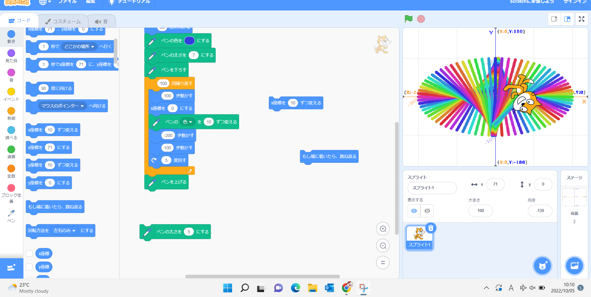
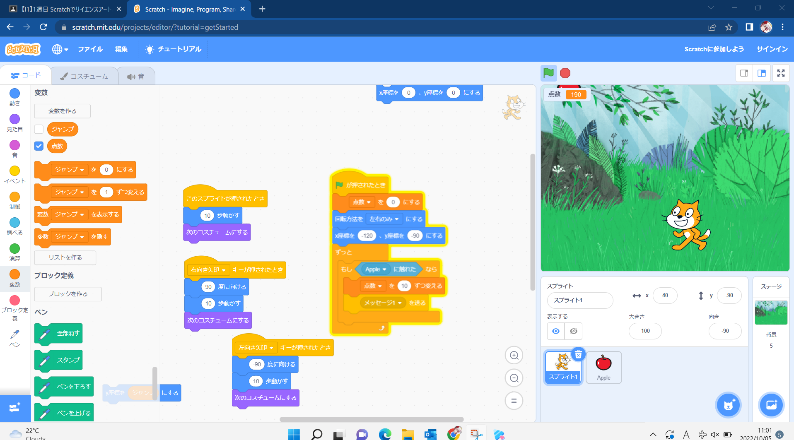

1週目のレポート ： 公大高専１年実習I-1
4組27番 TAITIN
第1週目
1-1 サイエンスアート

1.内容
スクラッチというサイトの中でプログラムを組み線を描いた 。
2.感想
スクラッチは、中学校で使用したことがあり大体の使用方法などは分かっていたけれど線を描くなどの自分の知らない新しい機能について知ることができよかった と思いました。
1-2 ゲーム

1.内容
スクラッチを使用し、プログラミングを組んで簡単なゲームを作った。
2.感想
資料を見ることでプログラミングを組むことができたけれど、何もなしの状態だとできないと思ったのでしっかりこれから勉強していこうと思いました。
1-3 ホームページ作成
私のホームページ
1.内容
ないようないよう
2.感想
かんそうかんそう